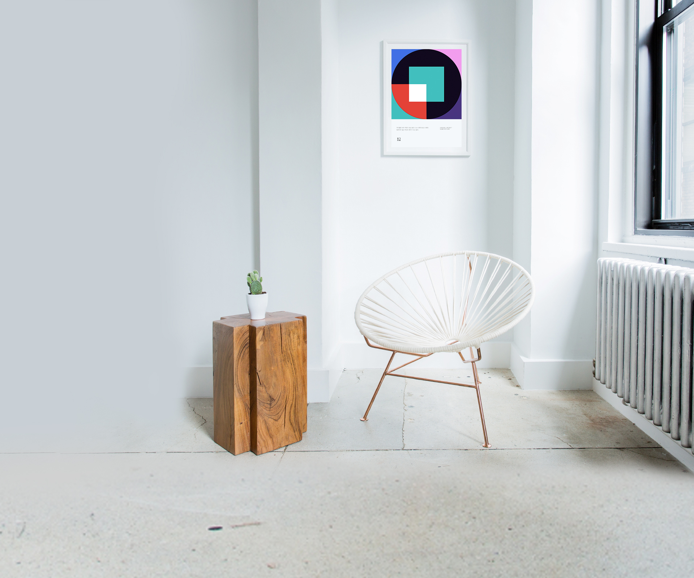

한글의 조형미를 이용하여 자신만의 패턴을 생성하고 그것을 이용한 상품을 구매할 수 있는 서비스를 만들어보았다. 웹 개발 스터디의 일환으로 해당 서비스를 기획하게 되었다. 현재 디자인은 완료하고, 코드 작업을 진행중이다.
한글의 기하학적인 형태를 이용하여 패턴을 만들어 낸다. 이름을 입력하면 초성을 추출하여, 해당 자음의 패턴을 겹쳐서 자신만의 패턴을 완성한다. 정해진 색상 세트에서 임의로 색상을 입혀서 개인만의 패턴을 완성한다.
생성된 패턴을 이용하여 프로필 이미지로 사용하거나,
액자, 쿠션, 폰케이스 등 인테리어 소품으로 활용할 수 있는 방안을 생각해보았다.